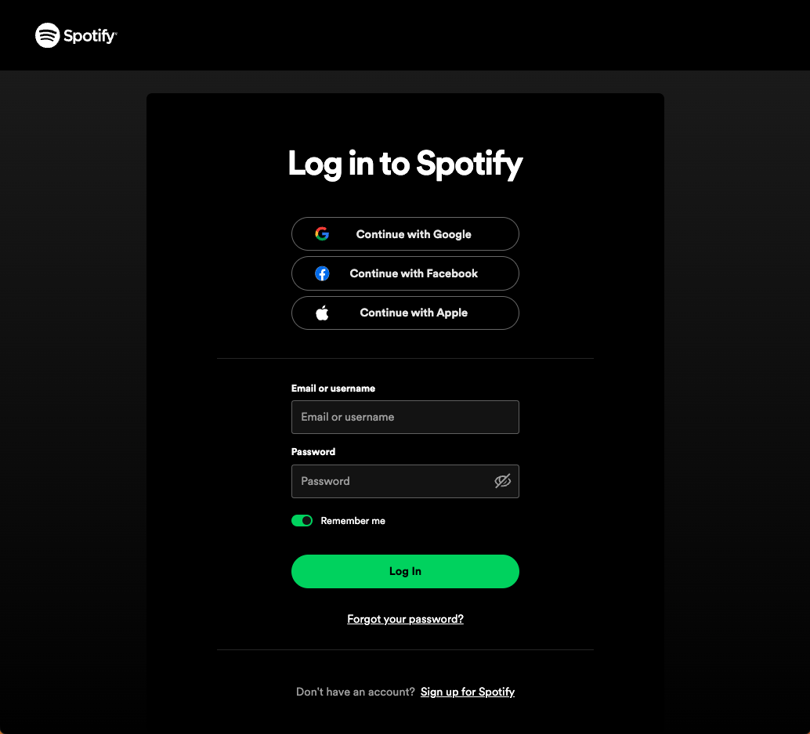
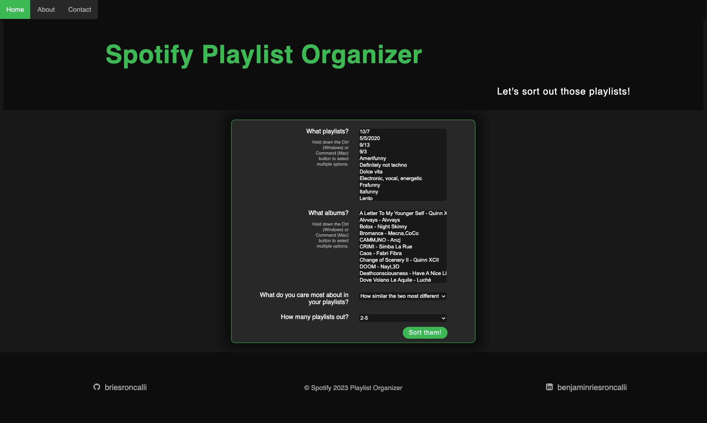
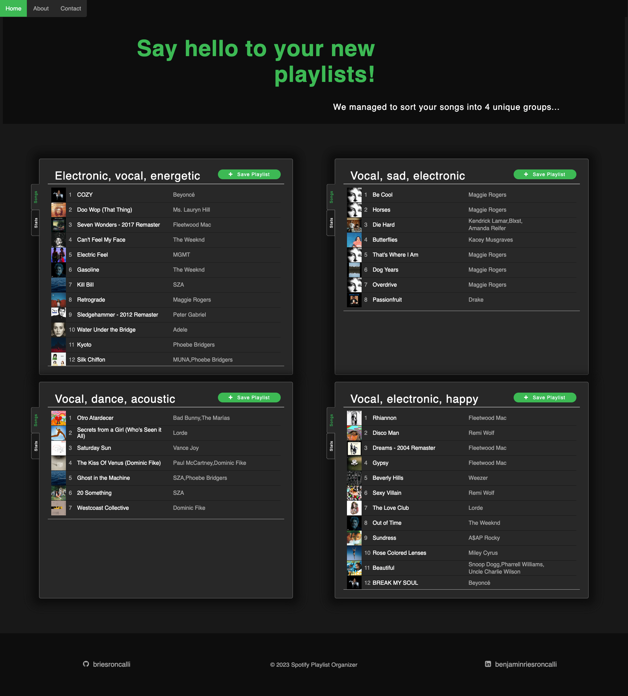

Spotify Playlist Organizer
A simple way to organize or make new playlists
About
This is a simple Web App that allows a user to organize and generate new playlists from the songs in their saved albums and playlists based on similarities in each song.
How to use
Upon accessing the webpage, the user is immediately redirected to log in to their Spotify account.
Once the user has successfully logged in to their account, they are redirected to the App's Home Page where they are prompted to select which of their saved playlists and albums they would like to organize into new playlists.
The user can also adjust their preferences for the way playlists are constructed and the number of playlists they wish to sort the songs into.
The application then sorts the song into playlists based on audio features of each song, such as danceability, energy, how acoustic it is, and more.
The newly organized playlists are then displayed with a short couple adjective description of the qualities of songs in each playlist.
The user can scroll through the playlists to view all of the songs in it and preview 30-second samples of each song by clicking the play button. By clicking on an artist or song name, users can navigate to their respective Spotify pages.
Users can also explore the properties of each playlist from the 'Stat' tab to the left of each playlist, which displays the number of songs in the playlist as well as their average features, popularity, and duration.
If a user likes a playlist, they can save it by clicking the 'Save Playlist' button in the top right of the playlist. The button updates to show that it has been saved.
If a user saves a playlist by accident, they can remove it from their playlist by simply reclicking the updated button.
Implementation
The application uses the Spotify API to access information about songs in a user's saved playlists and albums. It feeds features Spotify collects about the audio features of each song to a hierarchical clustering model. The user can make selections about their preferences for the resulting cluster's on the App's Home Page. These preferences are then translated into parameters and instructions for the clustering algorithm, which returns playlist grouping songs together based on similarity.
More information about the data the algorithm uses to cluster songs can be found at Spotify API Audio Features.
The hierarchical clustering algorithm is implemented in Python with the use of the scipy library.
See the full project on GitHub.